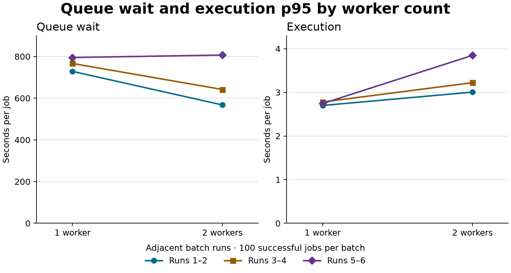

表示専用のデモ
CIジョブは
Worker停止からどう復旧するか
実行中にWorkerが停止した例を、受付から正式結果まで追います。各段階を開くと、実行権と結果がどう変わったかを確認できます。
障害復旧の流れ
過去の障害試験をもとにした再現データ
-
pushイベントを受け付ける
許可されたpushを受け付け、対象コミットの固定fixtureを指す実行を保存します。Workerが実行権を取得し、試行1を開始します。
-
Worker停止後に試行1が失効する
実行権の更新が止まり、監視プロセスがDB時刻で期限切れを確定します。同じDockerデーモンで試行1のコンテナを照合し、回収後に不在を記録します。
-
別のWorkerが試行2を開始する
初回の再試行は5秒の待機後に取得できます。実行IDとコミットは同じまま、新しい試行に新しい実行権を発行します。試行1から遅れて届いた完了報告は、現在の実行権と一致しないため拒否します。
-
試行2のチェック失敗を正式結果にする
試行2は終了コード1を記録します。Worker停止からの復旧と、チェックの合否はそれぞれ確認できます。正式結果には試行2が残り、試行1の失効も履歴に残ります。
1／2 Workerの比較実測
同じホストと固定fixtureで100ジョブを各3回。600件すべて正式成功。
| 指標 | 1 Worker | 2 Worker |
|---|---|---|
| キュー待ち p95 | 766.448 | 641.698 |
| 実行 p95 | 2.744 | 3.222 |
| バッチ所要 | 813.574 | 686.851 |

観測はこのホストと短い固定fixtureでの結果です。異なるホストやジョブでも同じ改善幅が出るかは未計測です。